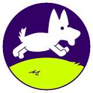

Brindar calidad en servicios médicos a nuestras mascotas y proveer un
asesoramiento integral sobre crianza, nutrición y manejo de pequeños animales.

Nuestra Visión
Ser reconocida como clínica veterinaria de referencia de pequeños animales por la
excelencia de nuestros servicios, la calidad humana y el amor por los animales.
Sobre Nosotros
Somos la primera veterinaria que se inauguró en la
zona conocido como Reino Animal, un sueño hecho
realidad
impulsado por el amor que los canes en especial que despertaron en nuestros
corazones